This website shows a collection of interactive graphs which allow the user to change which metrics they are observing for the top 100 rankings of each fight.
rDPS (raid DPS) - rDPS is unique to FFXIV and is damage done adjusted for raid-contributing buffs and debuffs.
nDPS (normal DPS) - nDPS is unique to FFXIV and is damage done adjusted for raid-contributing buffs and debuffs so that they do not contribute.
HPS - Healing per second.
rDPS rankings for P9S
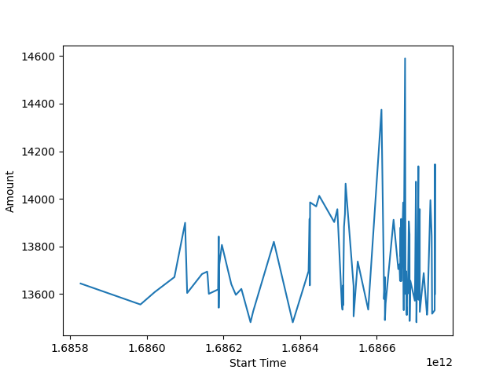nDPS rankings for P9S
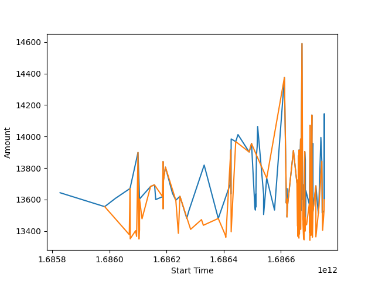HPS rankings for P9S
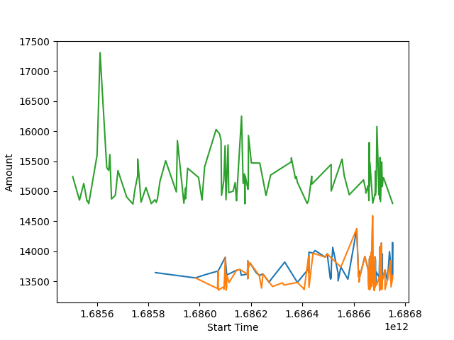rDPS rankings for P10S
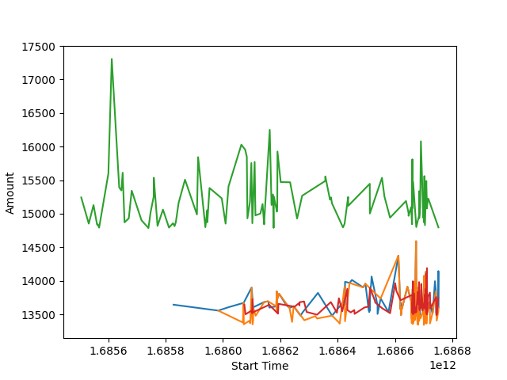nDPS rankings for P10S
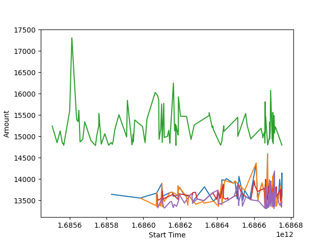HPS rankings for P10S
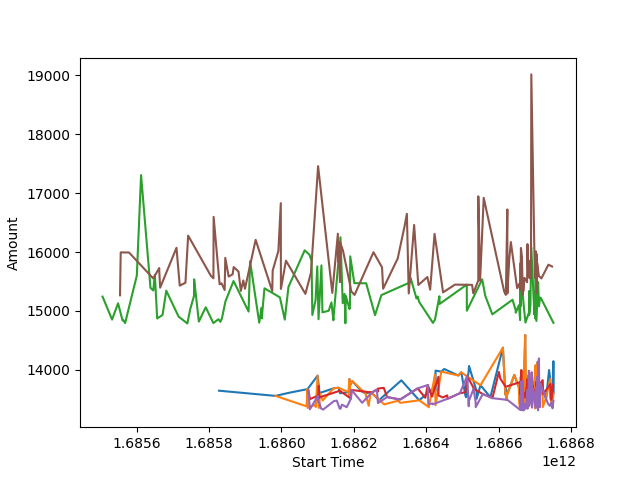rDPS rankings for P11S
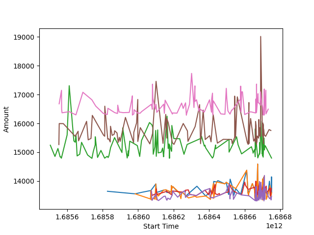nDPS rankings for P11S
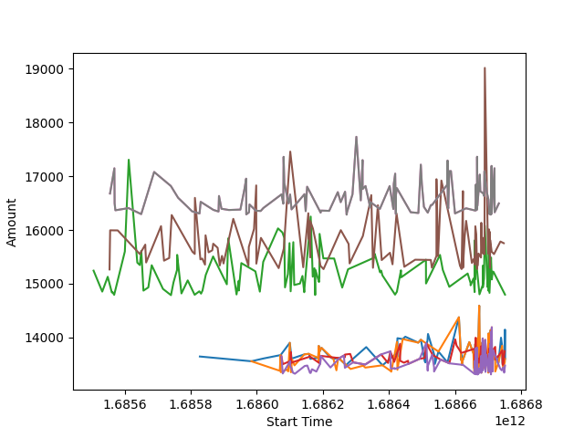HPS rankings for P11S
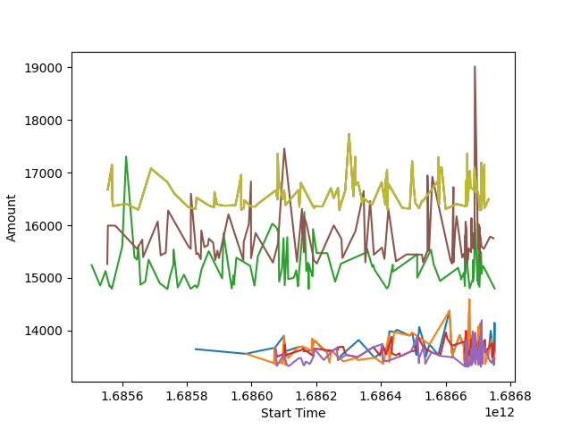rDPS rankings for P12SP1
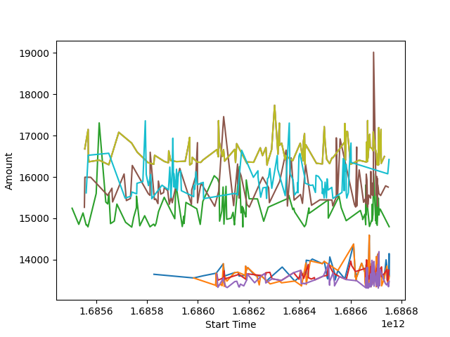nDPS rankings for P12SP1
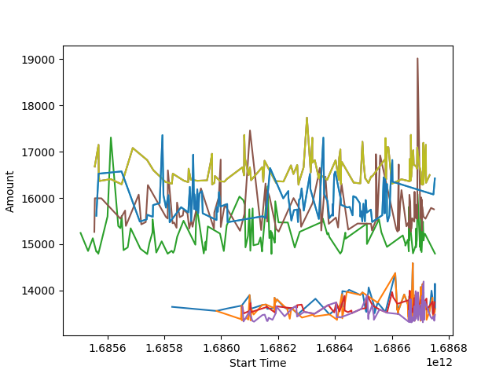HPS rankings for P12SP1
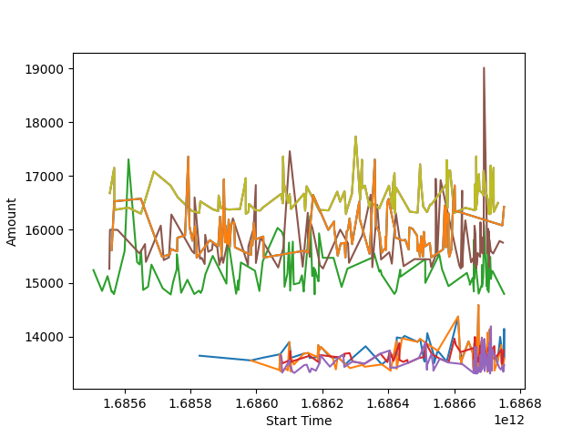rDPS rankings for P12SP2
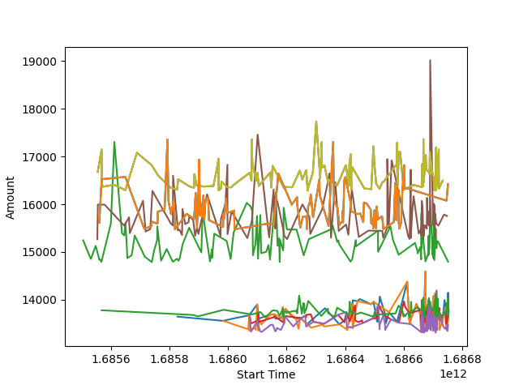nDPS rankings for P12SP2
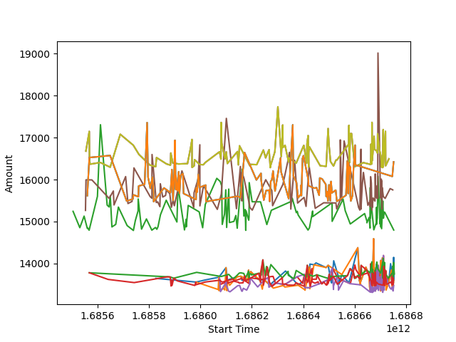HPS rankings for P12SP2
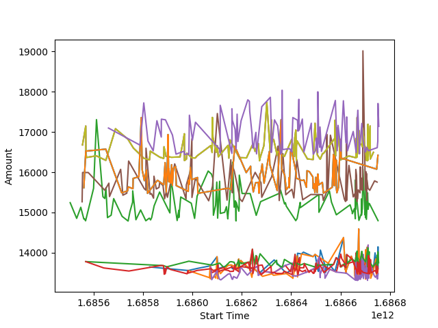There were some problems that I encountered along the way whilst developing the website, including having trouble creating the graphs at first, with the images being saved of the graphs being left in venv instead of the folder I wanted it to be in.
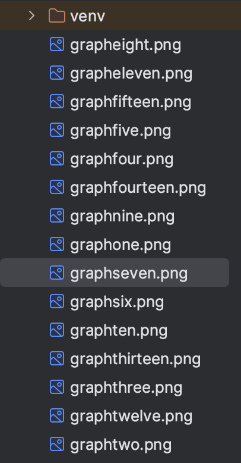On top of this issue, there were issues developing the tabs on the website as they are unable to be clicked to distinguish between each one, despite the tab code being implemented.
The graphs, although they were being saved as png files to add to the website, were not showing correctly at first as they were being saved to the wrong folder.
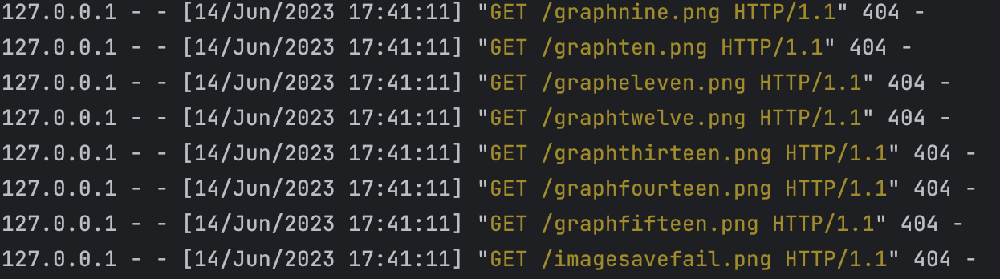For future improvements, I would like to find a way to filter out anomalies so that there is a clear trend in the line graph, as well as find a solution to the dates being in a strange format. I would also like to make it a lot more interactive when collecting data from the API so that users have the ability to pick and choose various fights and potentially even individual reports. I could also add the ability to go to the next page of character rankings so that there is a wider variety of results and therefore plot points for the line graph.